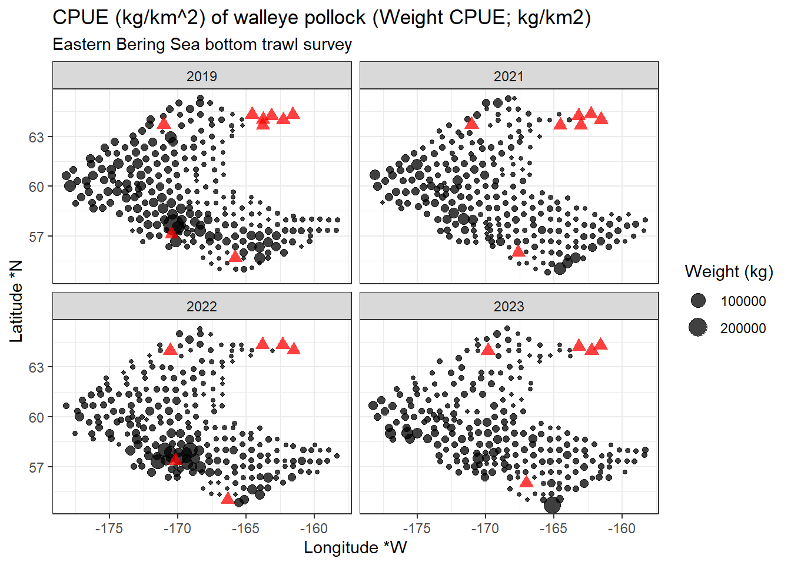
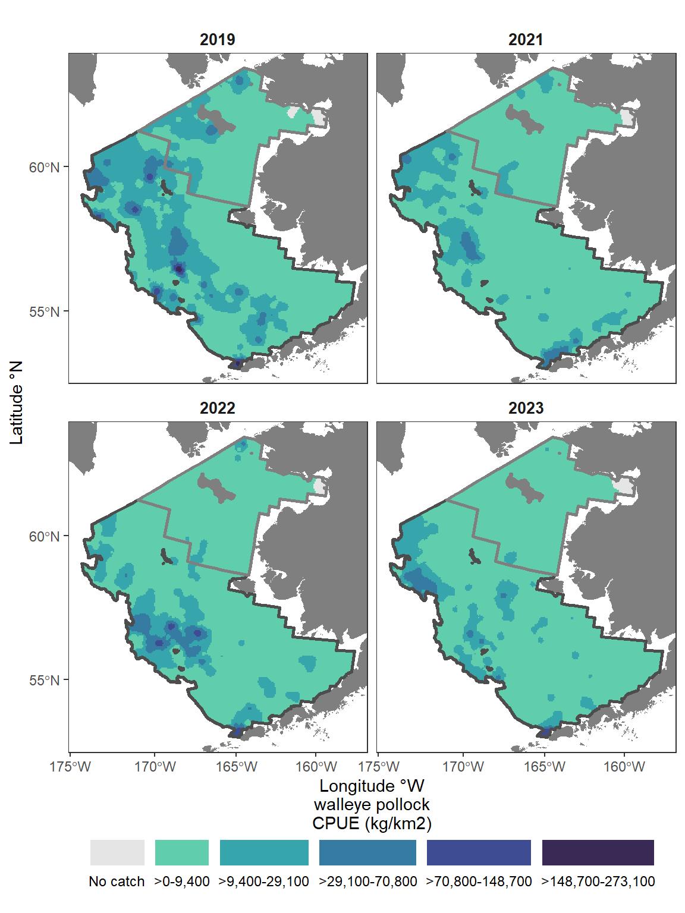
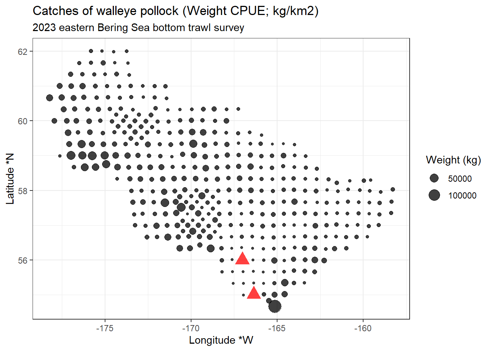
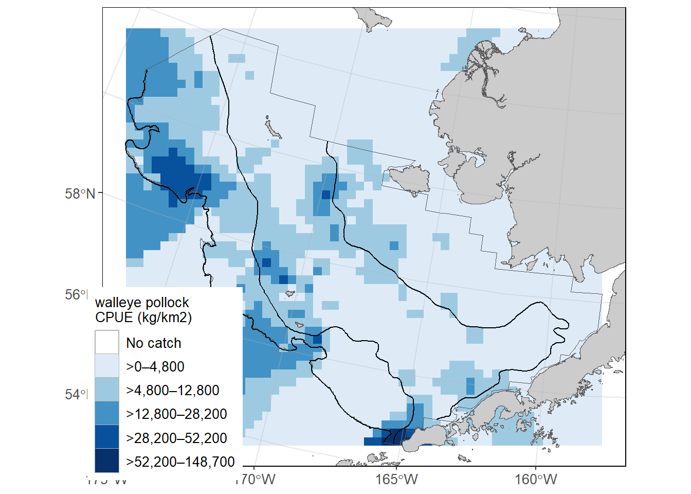

# link to the API
api_link_haul <- 'https://apps-st.fisheries.noaa.gov/ods/foss/afsc_groundfish_survey_haul/'Access via API and R
An application programming interface (API) is a way for two or more computer programs to communicate with each other. More information about how to amend API links can be found here. Useful introductions to using APIs in R can be found here.
There are three tables the user can pull from the API. Learn more about them on the FOSS data description page. Here, you can see them in their raw JSON format: * haul: (https://apps-st.fisheries.noaa.gov/ods/foss/afsc_groundfish_survey_haul/)[https://apps-st.fisheries.noaa.gov/ods/foss/afsc_groundfish_survey_haul/] * catch: (https://apps-st.fisheries.noaa.gov/ods/foss/afsc_groundfish_survey_catch/)[https://apps-st.fisheries.noaa.gov/ods/foss/afsc_groundfish_survey_catch/] * species: (https://apps-st.fisheries.noaa.gov/ods/foss/afsc_groundfish_survey_species/)[https://apps-st.fisheries.noaa.gov/ods/foss/afsc_groundfish_survey_species/]
Here are some examples of how to use the data with R:
12 Examples of all species in all survey regions in all years
12.1 Ex. Load all rows of the catch, haul, and species data tables
Note that without specifying, a basic query to the API will only return 25 entries.
12.1.1 Haul data:
Load first 25 rows of data:
res <- httr::GET(url = api_link_haul)
# res ## Test connection
## convert from JSON format
data <- jsonlite::fromJSON(base::rawToChar(res$content))
# Find how many rows and columns are in the data pull
print(paste0("rows: ", dim(data$items)[1], "; cols: ", dim(data$items)[2]))[1] "rows: 25; cols: 28"Load all data:
Since the maxim number of rows a user can pull is 10,000 rows in a query, the user needs to cycle through by offsetting to the next 10,000 rows (as is shown here).
dat <- data.frame()
for (i in seq(0, 500000, 10000)){
## find how many iterations it takes to cycle through the data
print(i)
## query the API link
res <- httr::GET(url = paste0(api_link_haul, "?offset=",i,"&limit=10000"))
## convert from JSON format
data <- jsonlite::fromJSON(base::rawToChar(res$content))
## if there are no data, stop the loop
if (is.null(nrow(data$items))) {
break
}
## bind sub-pull to dat data.frame
dat <- dplyr::bind_rows(dat,
data$items %>%
dplyr::select(-links)) # necessary for API accounting, but not part of the dataset)
}[1] 0
[1] 10000
[1] 20000
[1] 30000
[1] 40000summary(dat) year srvy survey survey_name
Min. :1982 Length:33334 Length:33334 Length:33334
1st Qu.:1996 Class :character Class :character Class :character
Median :2005 Mode :character Mode :character Mode :character
Mean :2005
3rd Qu.:2014
Max. :2023
survey_definition_id cruise cruisejoin hauljoin
Min. : 47.00 Min. :198201 Min. : -766 Min. : -23126
1st Qu.: 47.00 1st Qu.:199601 1st Qu.: -691 1st Qu.: -13535
Median : 78.00 Median :200501 Median : -612 Median : -3958
Mean : 74.51 Mean :200507 Mean : 300438 Mean : 295896
3rd Qu.: 98.00 3rd Qu.:201401 3rd Qu.: 837800 3rd Qu.: 821743
Max. :143.00 Max. :202302 Max. :1225395 Max. :1225635
haul stratum station vessel_id
Min. : 1.0 Min. : 10.0 Length:33334 Min. : 1.0
1st Qu.: 56.0 1st Qu.: 31.0 Class :character 1st Qu.: 88.0
Median :112.0 Median : 50.0 Mode :character Median : 94.0
Mean :117.6 Mean :129.1 Mean :106.9
3rd Qu.:170.0 3rd Qu.:141.0 3rd Qu.:147.0
Max. :355.0 Max. :794.0 Max. :178.0
vessel_name date_time latitude_dd_start longitude_dd_start
Length:33334 Length:33334 Min. :51.19 Min. :-180.0
Class :character Class :character 1st Qu.:55.02 1st Qu.:-170.7
Mode :character Mode :character Median :57.18 Median :-165.2
Mean :56.89 Mean :-140.4
3rd Qu.:58.98 3rd Qu.:-154.4
Max. :65.34 Max. : 180.0
latitude_dd_end longitude_dd_end bottom_temperature_c surface_temperature_c
Min. :51.19 Min. :-180.0 Min. :-2.10 Min. :-1.100
1st Qu.:55.02 1st Qu.:-170.7 1st Qu.: 2.70 1st Qu.: 5.800
Median :57.18 Median :-165.2 Median : 4.10 Median : 7.500
Mean :56.89 Mean :-140.4 Mean : 3.84 Mean : 7.832
3rd Qu.:58.97 3rd Qu.:-154.4 3rd Qu.: 5.20 3rd Qu.: 9.400
Max. :65.35 Max. : 180.0 Max. :15.30 Max. :18.100
NA's :4 NA's :4 NA's :1601 NA's :849
depth_m distance_fished_km duration_hr net_width_m
Min. : 9 Min. :0.135 Min. :0.0250 Min. : 7.51
1st Qu.: 68 1st Qu.:1.498 1st Qu.:0.2710 1st Qu.:15.59
Median : 102 Median :2.527 Median :0.4900 Median :16.40
Mean : 138 Mean :2.207 Mean :0.4007 Mean :16.42
3rd Qu.: 156 3rd Qu.:2.831 3rd Qu.:0.5090 3rd Qu.:17.21
Max. :1200 Max. :4.334 Max. :0.9800 Max. :23.82
net_height_m area_swept_km2 performance
Min. : 0.000 Min. :0.002314 Min. :0.0000
1st Qu.: 2.399 1st Qu.:0.024251 1st Qu.:0.0000
Median : 5.886 Median :0.039562 Median :0.0000
Mean : 4.841 Mean :0.036404 Mean :0.2777
3rd Qu.: 6.799 3rd Qu.:0.047326 3rd Qu.:0.0000
Max. :11.038 Max. :0.077795 Max. :7.0000
NA's :3269 # Find how many rows and columns are in the data pull
print(paste0("rows: ", dim(dat)[1], "; cols: ", dim(dat)[2]))[1] "rows: 33334; cols: 27"# save outputs for later comparison
dat_haul_api <- dat# Print the first few lines of the data
head(dat, 3)year | srvy | survey | survey_name | survey_definition_id | cruise | cruisejoin | hauljoin | haul | stratum | station | vessel_id | vessel_name | date_time | latitude_dd_start | longitude_dd_start | latitude_dd_end | longitude_dd_end | bottom_temperature_c | surface_temperature_c | depth_m | distance_fished_km | duration_hr | net_width_m | net_height_m | area_swept_km2 | performance |
|---|---|---|---|---|---|---|---|---|---|---|---|---|---|---|---|---|---|---|---|---|---|---|---|---|---|---|
2016 | EBS | eastern Bering Sea | Eastern Bering Sea Crab/Groundfish Bottom Trawl Survey | 98 | 201601 | -707 | -15,804 | 195 | 61 | G-26 | 162 | ALASKA KNIGHT | 2016-07-26T08:08:20Z | 57.01199 | -173.2774 | 56.99235 | -173.2501 | 4.4 | 11.6 | 143 | 2.743 | 0.497 | 17.534 | 1.739 | 0.048096 | 0 |
2016 | EBS | eastern Bering Sea | Eastern Bering Sea Crab/Groundfish Bottom Trawl Survey | 98 | 201601 | -706 | -15,779 | 177 | 62 | N-27 | 94 | VESTERAALEN | 2016-07-23T07:20:29Z | 59.33460 | -174.4640 | 59.33421 | -174.4129 | 2.9 | 11.3 | 121 | 2.915 | 0.519 | 17.531 | 2.026 | 0.051103 | 0 |
2016 | EBS | eastern Bering Sea | Eastern Bering Sea Crab/Groundfish Bottom Trawl Survey | 98 | 201601 | -706 | -15,332 | 30 | 20 | N-05 | 94 | VESTERAALEN | 2016-06-06T17:38:50Z | 59.31723 | -165.3036 | 59.34582 | -165.3173 | 8.7 | 8.8 | 20 | 3.272 | 0.570 | 15.826 | 2.331 | 0.051783 | 0 |
12.1.2 Catch data:
# link to the API
api_link_catch <- 'https://apps-st.fisheries.noaa.gov/ods/foss/afsc_groundfish_survey_catch/'Load first 25 rows of data:
res <- httr::GET(url = api_link_catch)
# res ## Test connection
## convert from JSON format
data <- jsonlite::fromJSON(base::rawToChar(res$content))
# Find how many rows and columns are in the data pull
print(paste0("rows: ", dim(data$items)[1], "; cols: ", dim(data$items)[2]))[1] "rows: 25; cols: 8"Load all data:
Since the maxim number of rows a user can pull is 10,000 rows in a query, the user needs to cycle through by offsetting to the next 10,000 rows (as is shown here).
dat <- data.frame()
for (i in seq(0, 1000000, 10000)){
## find how many iterations it takes to cycle through the data
print(i)
## query the API link
res <- httr::GET(url = paste0(api_link_catch, "?offset=",i,"&limit=10000"))
## convert from JSON format
data <- jsonlite::fromJSON(base::rawToChar(res$content))
## if there are no data, stop the loop
if (is.null(nrow(data$items))) {
break
}
## bind sub-pull to dat data.frame
dat <- dplyr::bind_rows(dat,
data$items %>%
dplyr::select(-links)) # necessary for API accounting, but not part of the dataset)
}[1] 0
[1] 10000
[1] 20000
[1] 30000
[1] 40000
[1] 50000
[1] 60000
[1] 70000
[1] 80000
[1] 90000
[1] 100000
[1] 110000
[1] 120000
[1] 130000
[1] 140000
[1] 150000
[1] 160000
[1] 170000
[1] 180000
[1] 190000
[1] 200000
[1] 210000
[1] 220000
[1] 230000
[1] 240000
[1] 250000
[1] 260000
[1] 270000
[1] 280000
[1] 290000
[1] 300000
[1] 310000
[1] 320000
[1] 330000
[1] 340000
[1] 350000
[1] 360000
[1] 370000
[1] 380000
[1] 390000
[1] 400000
[1] 410000
[1] 420000
[1] 430000
[1] 440000
[1] 450000
[1] 460000
[1] 470000
[1] 480000
[1] 490000
[1] 500000
[1] 510000
[1] 520000
[1] 530000
[1] 540000
[1] 550000
[1] 560000
[1] 570000
[1] 580000
[1] 590000
[1] 600000
[1] 610000
[1] 620000
[1] 630000
[1] 640000
[1] 650000
[1] 660000
[1] 670000
[1] 680000
[1] 690000
[1] 700000
[1] 710000
[1] 720000
[1] 730000
[1] 740000
[1] 750000
[1] 760000
[1] 770000
[1] 780000
[1] 790000
[1] 800000
[1] 810000
[1] 820000
[1] 830000
[1] 840000
[1] 850000
[1] 860000
[1] 870000
[1] 880000
[1] 890000
[1] 900000
[1] 910000
[1] 920000
[1] 930000
[1] 940000summary(dat) hauljoin species_code cpue_kgkm2 cpue_nokm2
Min. : -23126 Min. : 1 Min. : 0 Min. : 13
1st Qu.: -13968 1st Qu.:21333 1st Qu.: 5 1st Qu.: 56
Median : -5200 Median :43010 Median : 40 Median : 207
Mean : 286755 Mean :47620 Mean : 1146 Mean : 4379
3rd Qu.: 816166 3rd Qu.:72751 3rd Qu.: 316 3rd Qu.: 1079
Max. :1225635 Max. :99999 Max. :3226235 Max. :21780780
NA's :118525
count weight_kg taxon_confidence
Min. : 1 Min. : 0.001 Length:939197
1st Qu.: 2 1st Qu.: 0.168 Class :character
Median : 7 Median : 1.480 Mode :character
Mean : 172 Mean : 38.354
3rd Qu.: 41 3rd Qu.: 11.700
Max. :867119 Max. :18187.700
NA's :118525 # Find how many rows and columns are in the data pull
print(paste0("rows: ", dim(dat)[1], "; cols: ", dim(dat)[2]))[1] "rows: 939197; cols: 7"# save outputs for later comparison
dat_catch_api <- dat# Print the first few lines of the data
head(dat_catch_api, 3)hauljoin | species_code | cpue_kgkm2 | cpue_nokm2 | count | weight_kg | taxon_confidence |
|---|---|---|---|---|---|---|
-12,549 | 72500 | 2.827807 | 45.60979 | 1 | 0.062 | 1 |
-12,556 | 99993 | 0.169097 | 42.27421 | 1 | 0.004 | 1 |
-12,521 | 30060 | 24.596616 | 43.15196 | 1 | 0.570 | 1 |
12.1.3 Species data:
Since there are less than 10,000 rows of species data (and the maxim number of rows a user can pull from this API is 10,000 rows in a query), we can simply call ?offset=0&limit=10000 in our query call.
# link to the API
api_link_species <- 'https://apps-st.fisheries.noaa.gov/ods/foss/afsc_groundfish_survey_species/'res <- httr::GET(url = paste0(api_link_species, "?offset=0&limit=10000"))
# res ## Test connection
## convert from JSON format
data <- jsonlite::fromJSON(base::rawToChar(res$content))
dat <- data$items %>%
dplyr::select(-links) # necessary for API accounting, but not part of the dataset
summary(dat) species_code scientific_name common_name id_rank
Min. : 1 Length:1894 Length:1894 Length:1894
1st Qu.:30105 Class :character Class :character Class :character
Median :70061 Mode :character Mode :character Mode :character
Mean :58788
3rd Qu.:80543
Max. :99999
worms itis
Min. : 51 Min. : 46861
1st Qu.: 134194 1st Qu.: 79433
Median : 254533 Median : 157165
Mean : 299858 Mean : 209114
3rd Qu.: 368813 3rd Qu.: 167413
Max. :1699283 Max. :1206057
NA's :233 NA's :388 # Find how many rows and columns are in the data pull
print(paste0("rows: ", dim(dat)[1], "; cols: ", dim(dat)[2]))[1] "rows: 1894; cols: 6"# save outputs for later comparison
dat_species_api <- dat# Print the first few lines of the data
head(data$items, 3)species_code | scientific_name | common_name | id_rank | worms | itis | links |
|---|---|---|---|---|---|---|
22200 | Liparidae | snailfish unid. | family | 234519 | 555701 | [[data.frame]] |
22204 | Liparis dennyi | marbled snailfish | species | 254550 | 167557 | [[data.frame]] |
22209 | Liparis callyodon | spotted snailfish | species | 274505 | 167553 | [[data.frame]] |
12.2 Ex. Create zero-filled data for 2023 eastern Bering Sea walleye pollock and plot
It is important to create and have access to zero-fill (presence and absence) so you can do simple analyses and plot data.
# come up with full combination of what species should be listed for what hauls/surveys
# for zero-filled data, all species caught in a survey need to have zero or non-zero row entries for a haul
comb <- dplyr::full_join(
# find all species that have been caught, by survey
x = dplyr::left_join(dat_catch_api, dat_haul_api, by = "hauljoin") %>%
dplyr::select(survey_definition_id, species_code) %>%
dplyr::distinct(),
# find all haul events (hauljoins), by survey
y = dat_haul_api %>%
dplyr::select(survey_definition_id, hauljoin) %>%
dplyr::distinct(),
relationship = "many-to-many",
by = "survey_definition_id"
) %>%
dplyr::select(-survey_definition_id) # redundant
head(comb, 3) species_code hauljoin
1 72500 -21545
2 72500 -21474
3 72500 -21217# Join data to make a full zero-filled CPUE dataset
dat_zerofill_api <- comb %>%
# add species data to unique species by survey table
dplyr::left_join(dat_species_api) %>% # , "species_code"
# add haul data
dplyr::left_join(dat_haul_api) %>% # , c("hauljoin")
# add catch data
dplyr::left_join(dat_catch_api) %>% # , c("species_code", "hauljoin")
# modify zero-filled rows
dplyr::mutate(
cpue_kgkm2 = ifelse(is.na(cpue_kgkm2), 0, cpue_kgkm2),
cpue_nokm2 = ifelse(is.na(cpue_nokm2), 0, cpue_nokm2),
count = ifelse(is.na(count), 0, count),
weight_kg = ifelse(is.na(weight_kg), 0, weight_kg))
## Find how many rows and columns are in the data pull.
## Because all of the data have been full joined together,
## there should be the maximum number of rows.
print(paste0("rows: ", dim(dat)[1], "; cols: ", dim(dat)[2]))[1] "rows: 1894; cols: 6"head(dat, 3) %>%
flextable::flextable() %>% flextable::theme_zebra()species_code | scientific_name | common_name | id_rank | worms | itis |
|---|---|---|---|---|---|
22,200 | Liparidae | snailfish unid. | family | 234,519 | 555,701 |
22,204 | Liparis dennyi | marbled snailfish | species | 254,550 | 167,557 |
22,209 | Liparis callyodon | spotted snailfish | species | 274,505 | 167,553 |
12.3 Ex. Visualize CPUE data in distribution map
Using the zero-filled data from the previous example, we can make a few plots!
Here is some example data of 2023 through 2019 (year %in% 2019:2023) eastern and northern Bering Sea (srvy == c("EBS", "NBS)) walleye pollock (species_code == 21740).
dat0 <- dat_zerofill_api %>%
dplyr::filter(year %in% c(2019:2023) &
srvy == c("EBS", "NBS") &
species_code == 21740)
print(paste0("rows: ", dim(dat)[1], "; cols: ", dim(dat)[2]))[1] "rows: 1894; cols: 6"head(dat0, 3) %>% flextable::flextable() %>% flextable::theme_zebra()species_code | hauljoin | scientific_name | common_name | id_rank | worms | itis | year | srvy | survey | survey_name | survey_definition_id | cruise | cruisejoin | haul | stratum | station | vessel_id | vessel_name | date_time | latitude_dd_start | longitude_dd_start | latitude_dd_end | longitude_dd_end | bottom_temperature_c | surface_temperature_c | depth_m | distance_fished_km | duration_hr | net_width_m | net_height_m | area_swept_km2 | performance | cpue_kgkm2 | cpue_nokm2 | count | weight_kg | taxon_confidence |
|---|---|---|---|---|---|---|---|---|---|---|---|---|---|---|---|---|---|---|---|---|---|---|---|---|---|---|---|---|---|---|---|---|---|---|---|---|---|
21,740 | -22,490 | Gadus chalcogrammus | walleye pollock | species | 300,735 | 934,083 | 2,023 | EBS | eastern Bering Sea | Eastern Bering Sea Crab/Groundfish Bottom Trawl Survey | 98 | 202,301 | -759 | 109 | 32 | G-18 | 162 | ALASKA KNIGHT | 2023-06-21T12:51:22Z | 56.99438 | -168.3313 | 57.01985 | -168.3298 | 3.5 | 7.4 | 81 | 2.832 | 0.518 | 17.410 | 1.718 | 0.049305 | 0 | 3,484.7902 | 5,983.151 | 295 | 171.818 | |
21,740 | -21,735 | Gadus chalcogrammus | walleye pollock | species | 300,735 | 934,083 | 2,022 | EBS | eastern Bering Sea | Eastern Bering Sea Crab/Groundfish Bottom Trawl Survey | 98 | 202,201 | -755 | 186 | 90 | S-28 | 94 | VESTERAALEN | 2022-07-26T10:57:25Z | 61.02685 | -175.5337 | 61.00428 | -175.5545 | 0.6 | 8.2 | 100 | 2.752 | 0.531 | 18.523 | 1.479 | 0.050975 | 0 | 7,290.7669 | 23,835.075 | 1,215 | 371.649 | 1 |
21,740 | -21,626 | Gadus chalcogrammus | walleye pollock | species | 300,735 | 934,083 | 2,022 | EBS | eastern Bering Sea | Eastern Bering Sea Crab/Groundfish Bottom Trawl Survey | 98 | 202,201 | -756 | 155 | 43 | Q-25 | 162 | ALASKA KNIGHT | 2022-07-17T16:00:43Z | 60.30844 | -173.3738 | 60.29943 | -173.3667 | 2.4 | 8.1 | 63 | 1.078 | 0.189 | 17.600 | 1.884 | 0.018973 | 0 | 528.6515 | 1,370.383 | 26 | 10.030 | 1 |
12.3.1 Plot locations
library(ggplot2)
ggplot2::ggplot(data = dat0 %>% dplyr::filter(cpue_kgkm2 != 0),
mapping = aes(x = longitude_dd_start,
y = latitude_dd_start,
size = cpue_kgkm2)) +
ggplot2::geom_point(alpha = .75) +
ggplot2::geom_point(data = dat0 %>% dplyr::filter(cpue_kgkm2 == 0),
color = "red",
shape = 17,
alpha = .75,
size = 5) +
ggplot2::xlab("Longitude *W") +
ggplot2::ylab("Latitude *N") +
ggplot2::ggtitle(label = "Catches of walleye pollock (Weight CPUE; kg/km2)",
subtitle = "Eastern Bering Sea bottom trawl survey") +
ggplot2::scale_size_continuous(name = "Weight (kg)") +
ggplot2::facet_wrap(facets = vars(year)) +
ggplot2::theme_bw()
12.3.2 Plot inverse-distance weighted modeled product of locations
This map is constructed using akgfmaps. To make IDW plots, you must have data from all stations surveyed, even if no fish of interest were found there.
idw <- akgfmaps::make_idw_stack(
x = dat0 %>%
dplyr::select(COMMON_NAME = common_name,
CPUE_KGHA = cpue_kgkm2,
LATITUDE = latitude_dd_start,
LONGITUDE = longitude_dd_start,
year),
grouping.vars = "year",
region = "bs.all", # Predefined EBS area
set.breaks = "jenks", # Gets Jenks breaks from classint::classIntervals()
in.crs = "+proj=longlat", # Set input coordinate reference system
out.crs = "EPSG:3338", # Set output coordinate reference system
extrapolation.grid.type = "sf")[inverse distance weighted interpolation]
[inverse distance weighted interpolation]
[inverse distance weighted interpolation]
[inverse distance weighted interpolation]
[inverse distance weighted interpolation]
[inverse distance weighted interpolation]
[inverse distance weighted interpolation]
[inverse distance weighted interpolation]shps <- akgfmaps::get_base_layers(
select.region = "bs.all",
include.corners = TRUE,
set.crs = "EPSG:3338")
# set.breaks <- akgfmaps::eval_plot_breaks(CPUE = dat0$cpue_kgkm2, n.breaks = 5)
# set.breaks <- as.vector(unlist(set.breaks[set.breaks$style == "pretty", -1]))
set.breaks <- c(0, 50000, 100000, 150000, 200000, 250000)
figure_print <- ggplot() +
# add map of alaska
ggplot2::geom_sf(data = shps$akland,
color = NA,
fill = "grey50") +
# add IDW plots
geom_sf(data = idw$extrapolation.stack,
mapping = aes(fill = var1.pred),
na.rm = FALSE,
show.legend = TRUE,
color = NA) +
ggplot2::scale_fill_manual(
name = "walleye pollock\nCPUE (kg/km2)",
values = c("gray90",
viridis::viridis(
option = "mako",
direction = -1,
n = length(set.breaks)-1,
begin = 0.20,
end = 0.80)),
na.translate = FALSE, # Don't use NA
drop = FALSE) +
# seperate plots by year
ggplot2::facet_wrap(facets = vars(year), nrow = 2) +
# add survey area
ggplot2::geom_sf(
data = shps$survey.area,
mapping = aes(color = SURVEY,
geometry = geometry),
fill = "transparent",
linewidth = 1,
show.legend = FALSE) +
ggplot2::scale_color_manual(
name = " ",
values = c("grey30", "grey50"),
breaks = shps$survey.area$SURVEY,
labels = shps$survey.area$SRVY) +
# lat/lon axis and map bounds
ggplot2::scale_x_continuous(name = "Longitude °W",
breaks = seq(-180, -150, 5)) +
ggplot2::scale_y_continuous(name = "Latitude °N",
breaks = seq(50, 65, 5)) + # seq(52, 62, 2)
ggplot2::coord_sf(xlim = sf::st_bbox(shps$survey.area)[c(1,3)],
ylim = sf::st_bbox(shps$survey.area)[c(2,4)]) +
# add theme aesthetics
ggplot2::guides(
fill = guide_legend(
order = 1,
title.position = "top",
label.position = "bottom",
title.hjust = 0.5,
override.aes = list(color = NA),
nrow = 1),
color = "none") +
ggplot2::theme(
panel.background = element_rect(fill = "white", colour = NA),
panel.border = element_rect(fill = NA, colour = "grey20"),
strip.background = element_blank(),
strip.text = element_text(size = 10, face = "bold"),
legend.text = element_text(size = 9),
legend.background = element_rect(colour = "transparent",
fill = "transparent"),
legend.key = element_rect(colour = "transparent",
fill = "transparent"),
legend.position = "bottom",
legend.box = "horizontal",
legend.box.spacing = unit(0, "pt"), # reduce space between legend & plot
legend.margin=margin(0, 0, 0, 0) )
figure_print
13 Examples or one species in one survey region in one year
13.1 Ex. Show catch data for 2023 eastern Bering Sea Walleye Pollock
Data downloads and joins for just one species, survey, and year are much faster and easier to do.
First, because year is identified in the haul table, we need to identify all of the hauls (or more specifically, hauljoin codes) that were completed in the eastern Bering Sea ("srvy":"EBS") in 2023 ("year":2023).
## query the API link
res <- httr::GET(url = paste0(api_link_haul, '?limit=10000&q={"year":2023,"srvy":"EBS"}'))
## convert from JSON format
data <- jsonlite::fromJSON(base::rawToChar(res$content))
dat <- data$items %>%
dplyr::select(-links) # necessary for API accounting, but not part of the dataset
## show summary of data to make sure it is subset correctly
summary(dat %>% dplyr::mutate(srvy = as.factor(srvy))) year srvy survey survey_name
Min. :2023 EBS:376 Length:376 Length:376
1st Qu.:2023 Class :character Class :character
Median :2023 Mode :character Mode :character
Mean :2023
3rd Qu.:2023
Max. :2023
survey_definition_id cruise cruisejoin hauljoin
Min. :98 Min. :202301 Min. :-760.0 Min. :-23019
1st Qu.:98 1st Qu.:202301 1st Qu.:-760.0 1st Qu.:-22776
Median :98 Median :202301 Median :-759.0 Median :-22539
Mean :98 Mean :202301 Mean :-759.5 Mean :-22552
3rd Qu.:98 3rd Qu.:202301 3rd Qu.:-759.0 3rd Qu.:-22333
Max. :98 Max. :202301 Max. :-759.0 Max. :-22110
haul stratum station vessel_id
Min. : 7.00 Min. :10.00 Length:376 Min. :134.0
1st Qu.: 65.75 1st Qu.:31.00 Class :character 1st Qu.:134.0
Median :114.00 Median :41.00 Mode :character Median :162.0
Mean :114.16 Mean :39.22 Mean :148.3
3rd Qu.:161.25 3rd Qu.:50.00 3rd Qu.:162.0
Max. :224.00 Max. :90.00 Max. :162.0
vessel_name date_time latitude_dd_start longitude_dd_start
Length:376 Length:376 Min. :54.66 Min. :-178.2
Class :character Class :character 1st Qu.:57.00 1st Qu.:-172.7
Mode :character Mode :character Median :58.02 Median :-168.9
Mean :58.26 Mean :-168.8
3rd Qu.:59.50 3rd Qu.:-165.2
Max. :62.01 Max. :-158.3
latitude_dd_end longitude_dd_end bottom_temperature_c surface_temperature_c
Min. :54.68 Min. :-178.2 Min. :-1.600 Min. : 1.700
1st Qu.:57.01 1st Qu.:-172.7 1st Qu.: 1.200 1st Qu.: 4.200
Median :58.02 Median :-168.9 Median : 2.700 Median : 6.550
Mean :58.26 Mean :-168.8 Mean : 2.249 Mean : 6.386
3rd Qu.:59.50 3rd Qu.:-165.2 3rd Qu.: 3.500 3rd Qu.: 8.525
Max. :62.01 Max. :-158.3 Max. : 5.400 Max. :11.000
depth_m distance_fished_km duration_hr net_width_m
Min. : 20.00 Min. :1.065 Min. :0.1890 Min. :12.90
1st Qu.: 54.75 1st Qu.:2.805 1st Qu.:0.5100 1st Qu.:16.66
Median : 74.00 Median :2.889 Median :0.5180 Median :17.27
Mean : 80.75 Mean :2.854 Mean :0.5129 Mean :17.15
3rd Qu.:105.00 3rd Qu.:2.945 3rd Qu.:0.5260 3rd Qu.:17.83
Max. :171.00 Max. :3.849 Max. :0.6560 Max. :20.29
net_height_m area_swept_km2 performance
Min. :1.300 Min. :0.02017 Min. :0.0000
1st Qu.:1.875 1st Qu.:0.04725 1st Qu.:0.0000
Median :2.064 Median :0.04944 Median :0.0000
Mean :2.107 Mean :0.04892 Mean :0.1075
3rd Qu.:2.343 3rd Qu.:0.05134 3rd Qu.:0.0000
Max. :3.196 Max. :0.06369 Max. :6.2200 ## Find how many rows and columns are in the data pull.
## The eastern Bering Sea survey has 376 stations in it,
## so this should have a similar number of rows.
print(paste0("rows: ", dim(dat)[1], "; cols: ", dim(dat)[2]))[1] "rows: 376; cols: 27"# save outputs for later comparison
dat_haul_ex <- dat# Print the first few lines of the data
head(dat_haul_ex, 3)year | srvy | survey | survey_name | survey_definition_id | cruise | cruisejoin | hauljoin | haul | stratum | station | vessel_id | vessel_name | date_time | latitude_dd_start | longitude_dd_start | latitude_dd_end | longitude_dd_end | bottom_temperature_c | surface_temperature_c | depth_m | distance_fished_km | duration_hr | net_width_m | net_height_m | area_swept_km2 | performance |
|---|---|---|---|---|---|---|---|---|---|---|---|---|---|---|---|---|---|---|---|---|---|---|---|---|---|---|
2023 | EBS | eastern Bering Sea | Eastern Bering Sea Crab/Groundfish Bottom Trawl Survey | 98 | 202301 | -759 | -22,490 | 109 | 32 | G-18 | 162 | ALASKA KNIGHT | 2023-06-21T12:51:22Z | 56.99438 | -168.3313 | 57.01985 | -168.3298 | 3.5 | 7.4 | 81 | 2.832 | 0.518 | 17.410 | 1.718 | 0.049305 | 0 |
2023 | EBS | eastern Bering Sea | Eastern Bering Sea Crab/Groundfish Bottom Trawl Survey | 98 | 202301 | -760 | -22,519 | 99 | 32 | F-19 | 134 | NORTHWEST EXPLORER | 2023-06-23T12:29:26Z | 56.66742 | -168.9206 | 56.68896 | -168.8964 | 4.1 | 7.3 | 99 | 2.820 | 0.514 | 18.057 | 1.969 | 0.050921 | 0 |
2023 | EBS | eastern Bering Sea | Eastern Bering Sea Crab/Groundfish Bottom Trawl Survey | 98 | 202301 | -759 | -22,827 | 175 | 43 | QP2524 | 162 | ALASKA KNIGHT | 2023-07-18T15:36:29Z | 60.18568 | -173.0366 | 60.16572 | -173.0021 | -0.8 | 7.5 | 59 | 2.936 | 0.532 | 17.630 | 2.210 | 0.051762 | 0 |
13.1.1 Identify walleye pollock’s species code
In the catch data, we itemize species catches by species_code. To find out which species_code to use, you can check variations on the following code. Note that here the word pollock is case sensitive. All species common_name enteries are lower case except for proper nouns (.e.g, “Pacific”). The notation for finding a string is to use % around the phrase. Since % is a reserved character in a URL, you have to replace % with %25.
## query the API link. Use:
res <- httr::GET(url = paste0(api_link_species, '?q={%22common_name%22:%22walleye%20pollock%22}'))
# OR
res <- httr::GET(url = paste0(api_link_species, '?q={"common_name":{"$like":"%25pollock%25"}}'))
# OR
res <- httr::GET(url = paste0(api_link_species, '?q={"common_name":"walleye%20pollock"}'))
## convert from JSON format
data <- jsonlite::fromJSON(base::rawToChar(res$content))
# save outputs for later comparison
dat_species_ex <- data$items %>% dplyr::select(-links) # necessary for API accounting, but not part of the datasetdat_species_exspecies_code | scientific_name | common_name | id_rank | worms | itis |
|---|---|---|---|---|---|
21740 | Gadus chalcogrammus | walleye pollock | species | 300735 | 934083 |
13.1.2 Then, apply the hauljoins and species_code to catch query
We’ll use the data from the haul and species table we collected before to select 2023 eastern Bering Sea walleye pollock catch data.
## query the API link
# data for all walleye pollock caught in all 2023 eastern Bering Sea survey hauls
dat <- data.frame()
# there must be a better way to select multiple values for one parameter,
# but saving that, we will loop through each hauljoin and collect the data of interest
for (i in 1:nrow(dat_haul_ex)) {
res <- httr::GET(url = paste0(
api_link_catch,
'?q={"species_code":21740,"hauljoin":', dat_haul_ex$hauljoin[i],'}'))
## convert from JSON format
data <- jsonlite::fromJSON(base::rawToChar(res$content))
if (length(data$items) != 0) {
dat <- dplyr::bind_rows(
dat,
data$items %>%
dplyr::select(-links)) # necessary for API accounting, but not part of the dataset
}
}
## show summary of data to make sure it is subset correctly
summary(dat) hauljoin species_code cpue_kgkm2 cpue_nokm2
Min. :-23019 Min. :21740 Min. : 10.34 Min. : 18.26
1st Qu.:-22777 1st Qu.:21740 1st Qu.: 1454.44 1st Qu.: 2278.72
Median :-22540 Median :21740 Median : 3286.76 Median : 5875.33
Mean :-22553 Mean :21740 Mean : 6364.85 Mean : 11565.45
3rd Qu.:-22324 3rd Qu.:21740 3rd Qu.: 6956.25 3rd Qu.: 12512.98
Max. :-22110 Max. :21740 Max. :148679.68 Max. :202321.08
NA's :1
count weight_kg taxon_confidence
Min. : 1 Min. : 0.492 Mode:logical
1st Qu.: 114 1st Qu.: 71.560 NA's:374
Median : 286 Median : 162.310
Mean : 574 Mean : 315.419
3rd Qu.: 619 3rd Qu.: 350.399
Max. :9997 Max. :7346.495
NA's :1 ## Find how many rows and columns are in the data pull.
## The eastern Bering Sea survey has 376 stations in it,
## and pollock are often found in throughout the region
## so this should have a similar number of rows.
print(paste0("rows: ", dim(dat)[1], "; cols: ", dim(dat)[2]))[1] "rows: 374; cols: 7"# save outputs for later comparison
dat_catch_ex <- dat# Print the first few lines of the data
head(dat, 3)hauljoin | species_code | cpue_kgkm2 | cpue_nokm2 | count | weight_kg | taxon_confidence |
|---|---|---|---|---|---|---|
-22,490 | 21740 | 3,484.790 | 5,983.151 | 295 | 171.818 | |
-22,519 | 21740 | 13,112.849 | 34,799.180 | 1,772 | 667.716 | |
-22,827 | 21740 | 2,544.044 | 6,124.222 | 317 | 131.684 |
For reference and to help break down the above query, see these other query examples:
# data for haul -22775 (i.e., one specific haul)?
res <- httr::GET(url = paste0(api_link_catch,
'?offset=',i,'&limit=10000&q={"hauljoin":-22775}'))
# data for all walleye pollock (i.e., one species) caught in all years and surveys
res <- httr::GET(url = paste0(api_link_catch,
'?offset=',i,'&limit=10000&q={"species_code":21740}'))13.2 Ex. Create zero-filled data for 2023 eastern Bering Sea walleye pollock and plot
It is important to create and have access to zero-fill (presence and absence) so you can do simple analyses and plot data.
dat <- dplyr::full_join(
dat_haul_ex,
dat_catch_ex) %>%
dplyr::full_join(
dat_species_ex) %>%
# modify zero-filled rows
dplyr::mutate(
cpue_kgkm2 = ifelse(is.na(cpue_kgkm2), 0, cpue_kgkm2),
cpue_nokm2 = ifelse(is.na(cpue_nokm2), 0, cpue_nokm2),
count = ifelse(is.na(count), 0, count),
weight_kg = ifelse(is.na(weight_kg), 0, weight_kg))
## show summary of data to make sure it is subset correctly
summary(dat) year srvy survey survey_name
Min. :2023 Length:376 Length:376 Length:376
1st Qu.:2023 Class :character Class :character Class :character
Median :2023 Mode :character Mode :character Mode :character
Mean :2023
3rd Qu.:2023
Max. :2023
survey_definition_id cruise cruisejoin hauljoin
Min. :98 Min. :202301 Min. :-760.0 Min. :-23019
1st Qu.:98 1st Qu.:202301 1st Qu.:-760.0 1st Qu.:-22776
Median :98 Median :202301 Median :-759.0 Median :-22539
Mean :98 Mean :202301 Mean :-759.5 Mean :-22552
3rd Qu.:98 3rd Qu.:202301 3rd Qu.:-759.0 3rd Qu.:-22333
Max. :98 Max. :202301 Max. :-759.0 Max. :-22110
haul stratum station vessel_id
Min. : 7.00 Min. :10.00 Length:376 Min. :134.0
1st Qu.: 65.75 1st Qu.:31.00 Class :character 1st Qu.:134.0
Median :114.00 Median :41.00 Mode :character Median :162.0
Mean :114.16 Mean :39.22 Mean :148.3
3rd Qu.:161.25 3rd Qu.:50.00 3rd Qu.:162.0
Max. :224.00 Max. :90.00 Max. :162.0
vessel_name date_time latitude_dd_start longitude_dd_start
Length:376 Length:376 Min. :54.66 Min. :-178.2
Class :character Class :character 1st Qu.:57.00 1st Qu.:-172.7
Mode :character Mode :character Median :58.02 Median :-168.9
Mean :58.26 Mean :-168.8
3rd Qu.:59.50 3rd Qu.:-165.2
Max. :62.01 Max. :-158.3
latitude_dd_end longitude_dd_end bottom_temperature_c surface_temperature_c
Min. :54.68 Min. :-178.2 Min. :-1.600 Min. : 1.700
1st Qu.:57.01 1st Qu.:-172.7 1st Qu.: 1.200 1st Qu.: 4.200
Median :58.02 Median :-168.9 Median : 2.700 Median : 6.550
Mean :58.26 Mean :-168.8 Mean : 2.249 Mean : 6.386
3rd Qu.:59.50 3rd Qu.:-165.2 3rd Qu.: 3.500 3rd Qu.: 8.525
Max. :62.01 Max. :-158.3 Max. : 5.400 Max. :11.000
depth_m distance_fished_km duration_hr net_width_m
Min. : 20.00 Min. :1.065 Min. :0.1890 Min. :12.90
1st Qu.: 54.75 1st Qu.:2.805 1st Qu.:0.5100 1st Qu.:16.66
Median : 74.00 Median :2.889 Median :0.5180 Median :17.27
Mean : 80.75 Mean :2.854 Mean :0.5129 Mean :17.15
3rd Qu.:105.00 3rd Qu.:2.945 3rd Qu.:0.5260 3rd Qu.:17.83
Max. :171.00 Max. :3.849 Max. :0.6560 Max. :20.29
net_height_m area_swept_km2 performance species_code
Min. :1.300 Min. :0.02017 Min. :0.0000 Min. :21740
1st Qu.:1.875 1st Qu.:0.04725 1st Qu.:0.0000 1st Qu.:21740
Median :2.064 Median :0.04944 Median :0.0000 Median :21740
Mean :2.107 Mean :0.04892 Mean :0.1075 Mean :21740
3rd Qu.:2.343 3rd Qu.:0.05134 3rd Qu.:0.0000 3rd Qu.:21740
Max. :3.196 Max. :0.06369 Max. :6.2200 Max. :21740
NA's :2
cpue_kgkm2 cpue_nokm2 count weight_kg
Min. : 0 Min. : 0 Min. : 0.0 Min. : 0.00
1st Qu.: 1431 1st Qu.: 2238 1st Qu.: 111.5 1st Qu.: 70.64
Median : 3273 Median : 5842 Median : 280.0 Median : 161.44
Mean : 6331 Mean : 11473 Mean : 569.4 Mean : 313.74
3rd Qu.: 6946 3rd Qu.: 12345 3rd Qu.: 611.5 3rd Qu.: 349.81
Max. :148680 Max. :202321 Max. :9997.0 Max. :7346.49
taxon_confidence scientific_name common_name id_rank
Mode:logical Length:376 Length:376 Length:376
NA's:376 Class :character Class :character Class :character
Mode :character Mode :character Mode :character
worms itis
Min. :300735 Min. :934083
1st Qu.:300735 1st Qu.:934083
Median :300735 Median :934083
Mean :300735 Mean :934083
3rd Qu.:300735 3rd Qu.:934083
Max. :300735 Max. :934083
NA's :2 NA's :2 ## Find how many rows and columns are in the data pull.
## Because all of the data have been full joined together,
## there should be the maximum number of rows.
print(paste0("rows: ", dim(dat)[1], "; cols: ", dim(dat)[2]))[1] "rows: 376; cols: 38"head(dat, 3) %>%
flextable::flextable()year | srvy | survey | survey_name | survey_definition_id | cruise | cruisejoin | hauljoin | haul | stratum | station | vessel_id | vessel_name | date_time | latitude_dd_start | longitude_dd_start | latitude_dd_end | longitude_dd_end | bottom_temperature_c | surface_temperature_c | depth_m | distance_fished_km | duration_hr | net_width_m | net_height_m | area_swept_km2 | performance | species_code | cpue_kgkm2 | cpue_nokm2 | count | weight_kg | taxon_confidence | scientific_name | common_name | id_rank | worms | itis |
|---|---|---|---|---|---|---|---|---|---|---|---|---|---|---|---|---|---|---|---|---|---|---|---|---|---|---|---|---|---|---|---|---|---|---|---|---|---|
2,023 | EBS | eastern Bering Sea | Eastern Bering Sea Crab/Groundfish Bottom Trawl Survey | 98 | 202,301 | -759 | -22,490 | 109 | 32 | G-18 | 162 | ALASKA KNIGHT | 2023-06-21T12:51:22Z | 56.99438 | -168.3313 | 57.01985 | -168.3298 | 3.5 | 7.4 | 81 | 2.832 | 0.518 | 17.410 | 1.718 | 0.049305 | 0 | 21,740 | 3,484.790 | 5,983.151 | 295 | 171.818 | Gadus chalcogrammus | walleye pollock | species | 300,735 | 934,083 | |
2,023 | EBS | eastern Bering Sea | Eastern Bering Sea Crab/Groundfish Bottom Trawl Survey | 98 | 202,301 | -760 | -22,519 | 99 | 32 | F-19 | 134 | NORTHWEST EXPLORER | 2023-06-23T12:29:26Z | 56.66742 | -168.9206 | 56.68896 | -168.8964 | 4.1 | 7.3 | 99 | 2.820 | 0.514 | 18.057 | 1.969 | 0.050921 | 0 | 21,740 | 13,112.849 | 34,799.180 | 1,772 | 667.716 | Gadus chalcogrammus | walleye pollock | species | 300,735 | 934,083 | |
2,023 | EBS | eastern Bering Sea | Eastern Bering Sea Crab/Groundfish Bottom Trawl Survey | 98 | 202,301 | -759 | -22,827 | 175 | 43 | QP2524 | 162 | ALASKA KNIGHT | 2023-07-18T15:36:29Z | 60.18568 | -173.0366 | 60.16572 | -173.0021 | -0.8 | 7.5 | 59 | 2.936 | 0.532 | 17.630 | 2.210 | 0.051762 | 0 | 21,740 | 2,544.044 | 6,124.222 | 317 | 131.684 | Gadus chalcogrammus | walleye pollock | species | 300,735 | 934,083 |
13.3 Ex. Visualize CPUE data in distribution map
Using the zero-filled data from the previous example, we can make a few plots!
13.3.1 Plot locations
library(ggplot2)
ggplot2::ggplot(data = dat %>% dplyr::filter(cpue_kgkm2 != 0),
mapping = aes(x = longitude_dd_start,
y = latitude_dd_start,
size = cpue_kgkm2)) +
ggplot2::geom_point(alpha = .75) +
ggplot2::geom_point(data = dat %>% dplyr::filter(cpue_kgkm2 == 0),
color = "red",
shape = 17,
alpha = .75,
size = 5) +
ggplot2::xlab("Longitude *W") +
ggplot2::ylab("Latitude *N") +
ggplot2::ggtitle(label = "Catches of walleye pollock (Weight CPUE; kg/km2)",
subtitle = "2023 eastern Bering Sea bottom trawl survey") +
ggplot2::scale_size_continuous(name = "Weight (kg)") +
ggplot2::theme_bw()
13.3.2 Plot inverse-distance weighted modeled product of locations
This map is constructed using akgfmaps
# devtools::install_github("afsc-gap-products/akgfmaps", build_vignettes = TRUE)
library(akgfmaps)
figure0 <- akgfmaps::make_idw_map(
CPUE_KGHA = dat$cpue_kgkm2, # calculates the same, regardless of units.
LATITUDE = dat$latitude_dd_start,
LONGITUDE = dat$longitude_dd_start,
region = "bs.south", # Predefined EBS area
set.breaks = "jenks", # Gets Jenks breaks from classint::classIntervals()
in.crs = "+proj=longlat", # Set input coordinate reference system
out.crs = "EPSG:3338", # Set output coordinate reference system
grid.cell = c(20000, 20000))[inverse distance weighted interpolation]
[inverse distance weighted interpolation]figure0$plot + # 20x20km grid
ggplot2::guides(fill=guide_legend(title = "walleye pollock\nCPUE (kg/km2)"))
14 Other query examples
14.1 Ex. Combination of year, srvy, stratum
Show haul data where year is less than 1989, srvy = “EBS”, and stratum is not equal to 81.
res <- httr::GET(
url = paste0(api_link_haul,
'?&limit=10000&q={"year":{"$lt":1989},"stratum":{"$ne":"81"},"srvy":"EBS"}}'))
data <- jsonlite::fromJSON(base::rawToChar(res$content))
dat <- data$items %>%
dplyr::select(-links) # necessary for API accounting, but not part of the dataset)
summary(dat)
# Find how many rows and columns are in the data pull
print(paste0("rows: ", dim(dat)[1], "; cols: ", dim(dat)[2]))# Print the first few lines of the data
head(dat, 3)year | srvy | survey | survey_name | survey_definition_id | cruise | cruisejoin | hauljoin | haul | stratum | station | vessel_id | vessel_name | date_time | latitude_dd_start | longitude_dd_start | latitude_dd_end | longitude_dd_end | bottom_temperature_c | surface_temperature_c | depth_m | distance_fished_km | duration_hr | net_width_m | net_height_m | area_swept_km2 | performance | species_code | cpue_kgkm2 | cpue_nokm2 | count | weight_kg | taxon_confidence | scientific_name | common_name | id_rank | worms | itis |
|---|---|---|---|---|---|---|---|---|---|---|---|---|---|---|---|---|---|---|---|---|---|---|---|---|---|---|---|---|---|---|---|---|---|---|---|---|---|
2023 | EBS | eastern Bering Sea | Eastern Bering Sea Crab/Groundfish Bottom Trawl Survey | 98 | 202301 | -759 | -22,490 | 109 | 32 | G-18 | 162 | ALASKA KNIGHT | 2023-06-21T12:51:22Z | 56.99438 | -168.3313 | 57.01985 | -168.3298 | 3.5 | 7.4 | 81 | 2.832 | 0.518 | 17.410 | 1.718 | 0.049305 | 0 | 21,740 | 3,484.790 | 5,983.151 | 295 | 171.818 | Gadus chalcogrammus | walleye pollock | species | 300,735 | 934,083 | |
2023 | EBS | eastern Bering Sea | Eastern Bering Sea Crab/Groundfish Bottom Trawl Survey | 98 | 202301 | -760 | -22,519 | 99 | 32 | F-19 | 134 | NORTHWEST EXPLORER | 2023-06-23T12:29:26Z | 56.66742 | -168.9206 | 56.68896 | -168.8964 | 4.1 | 7.3 | 99 | 2.820 | 0.514 | 18.057 | 1.969 | 0.050921 | 0 | 21,740 | 13,112.849 | 34,799.180 | 1,772 | 667.716 | Gadus chalcogrammus | walleye pollock | species | 300,735 | 934,083 | |
2023 | EBS | eastern Bering Sea | Eastern Bering Sea Crab/Groundfish Bottom Trawl Survey | 98 | 202301 | -759 | -22,827 | 175 | 43 | QP2524 | 162 | ALASKA KNIGHT | 2023-07-18T15:36:29Z | 60.18568 | -173.0366 | 60.16572 | -173.0021 | -0.8 | 7.5 | 59 | 2.936 | 0.532 | 17.630 | 2.210 | 0.051762 | 0 | 21,740 | 2,544.044 | 6,124.222 | 317 | 131.684 | Gadus chalcogrammus | walleye pollock | species | 300,735 | 934,083 |